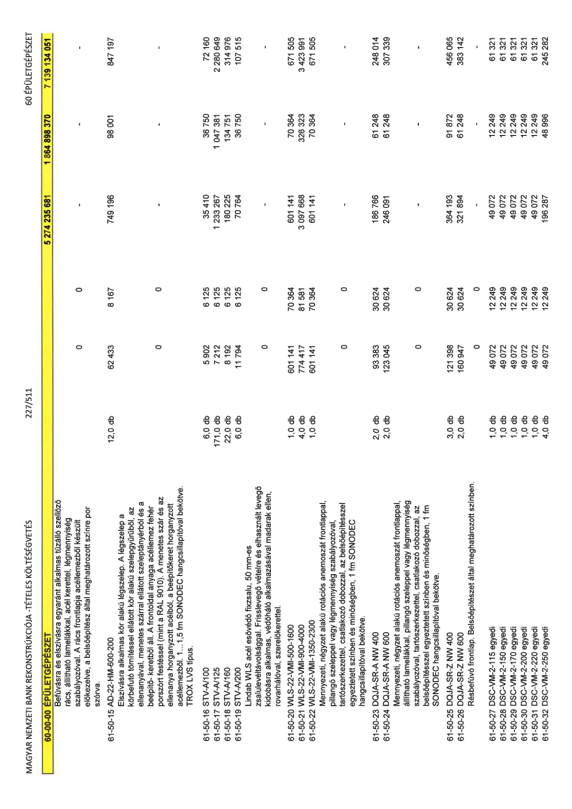

| Tétel | Menny. | Egys. | Anyag e.ár (net HUF) | Díj e.ár (net HUF) | Anyag összesen (net HUF) | Díj összesen (net HUF) | Anyag+Díj összesen (net HUF) |
|---|---|---|---|---|---|---|---|
| Befúvásra és elszívásra egyaránt alkalmas tűzálló szellőző rács, állítható lamellákkal, acél kerettel, légmennyiség szabályozóval. A rács frontlapja acéllemezből készült előkezelve, a belsőépítész által meghatározott színre por szórva. | 0 | 0 | 0 | 0 | 0 | 0 | 0 |
| 61-50-15 AD-22-HM-600-200 | 12,0 | db | 62 433 | 8 167 | 749 196 | 98 001 | 847 197 |
| Elszívásra alkalmas kör alakú légszelep. A légszelep a körbefutó tömítéssel ellátott kör alakú szelepygyűrűből, az ellenanyával, menetes szárral ellátott szeleptányérból és a beépítő- keretből áll. A frontoldal anyaga acéllemez fehér porszórt festéssel (mint a RAL 9010). A menetes szár és az ellenanya horganyzott acélból, a beépítőkeret horganyzott acéllemezből. 1...1,5 fm SONODEC hangcsillapítóval bekötve. TROX LVS típus. | 0 | 0 | 0 | 0 | 0 | 0 | 0 |
| 61-50-16 STV-A/100 | 6,0 | db | 5 902 | 6 125 | 35 410 | 36 750 | 72 160 |
| 61-50-17 STV-A/125 | 171,0 | db | 7 212 | 6 125 | 1 233 267 | 1 047 381 | 2 280 649 |
| 61-50-18 STV-A/160 | 22,0 | db | 8 192 | 6 125 | 180 225 | 134 751 | 314 976 |
| 61-50-19 STV-A/200 | 6,0 | db | 11 794 | 6 125 | 70 764 | 36 750 | 107 515 |
| Lindab WLS acél esővédő fixzsalu, 50 mm-es zsalulevéltávolsággal. Frisslevegő vételre és elhasznált levegő kidobásra alkalmas, védőháló alkalmazásával madarak ellen, rovarhálóval, szerelőkerettel. | 0 | 0 | 0 | 0 | 0 | 0 | 0 |
| 61-50-20 WLS-22-VMI-500-1600 | 1,0 | db | 601 141 | 70 364 | 601 141 | 70 364 | 671 505 |
| 61-50-21 WLS-22-VMI-900-4000 | 4,0 | db | 774 417 | 81 581 | 3 097 668 | 326 323 | 3 423 991 |
| 61-50-22 WLS-22-VMI-1350-2300 | 1,0 | db | 601 141 | 70 364 | 601 141 | 70 364 | 671 505 |
| Mennyezeti, négyzet alakú rotációs anemosztát frontlappal, pillangó szeleppel vagy légmennyiség szabályozóval, tartószerkezettel, csatlakozó dobozzal, az belsőépítésszel egyeztetett színben és minőségben, 1 fm SONODEC hangcsillapítóval bekötve. | 0 | 0 | 0 | 0 | 0 | 0 | 0 |
| 61-50-23 DQJA-SR-A NW 400 | 2,0 | db | 93 383 | 30 624 | 186 766 | 61 248 | 248 014 |
| 61-50-24 DQJA-SR-A NW 600 | 2,0 | db | 123 045 | 30 624 | 246 091 | 61 248 | 307 339 |
| Mennyezeti, négyzet alakú rotációs anemosztát frontlappal, állítható lamellákkal, pillangó szeleppel vagy légmennyiség szabályozóval, tartószerkezettel, csatlakozó dobozzal, az belsőépítésszel egyeztetett színben és minőségben, 1 fm SONODEC hangcsillapítóval bekötve. | 0 | 0 | 0 | 0 | 0 | 0 | 0 |
| 61-50-25 DQJA-SR-Z NW 400 | 3,0 | db | 121 398 | 30 624 | 364 193 | 91 872 | 456 065 |
| 61-50-26 DQJA-SR-Z NW 600 | 2,0 | db | 160 947 | 30 624 | 321 894 | 61 248 | 383 142 |
| Résbefúvó frontlap. Belsőépítészet által meghatározott színben. | 0 | 0 | 0 | 0 | 0 | 0 | 0 |
| 61-50-27 DSC-VM-2-115 egyedi | 1,0 | db | 49 072 | 12 249 | 49 072 | 12 249 | 61 321 |
| 61-50-28 DSC-VM-2-150 egyedi | 1,0 | db | 49 072 | 12 249 | 49 072 | 12 249 | 61 321 |
| 61-50-29 DSC-VM-2-170 egyedi | 1,0 | db | 49 072 | 12 249 | 49 072 | 12 249 | 61 321 |
| 61-50-30 DSC-VM-2-200 egyedi | 1,0 | db | 49 072 | 12 249 | 49 072 | 12 249 | 61 321 |
| 61-50-31 DSC-VM-2-220 egyedi | 1,0 | db | 49 072 | 12 249 | 49 072 | 12 249 | 61 321 |
| 61-50-32 DSC-VM-2-250 egyedi | 4,0 | db | 49 072 | 12 249 | 196 287 | 48 996 | 245 282 |
